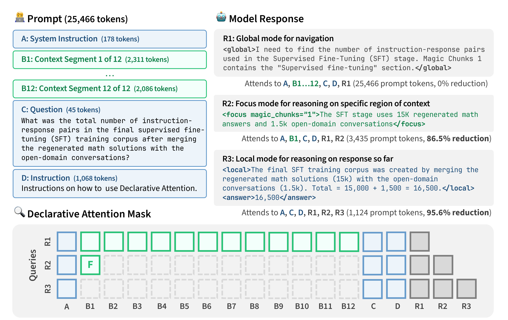
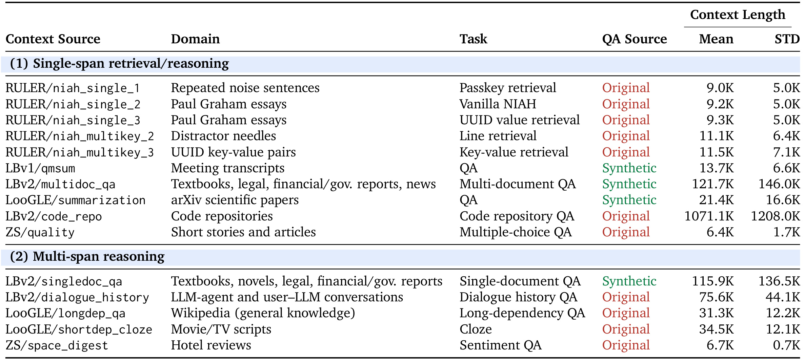
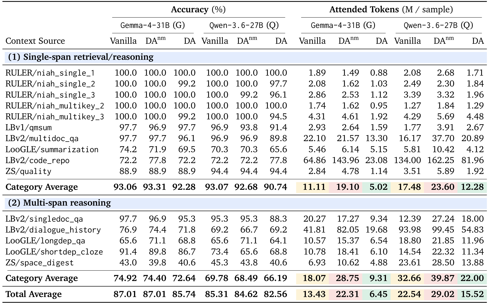
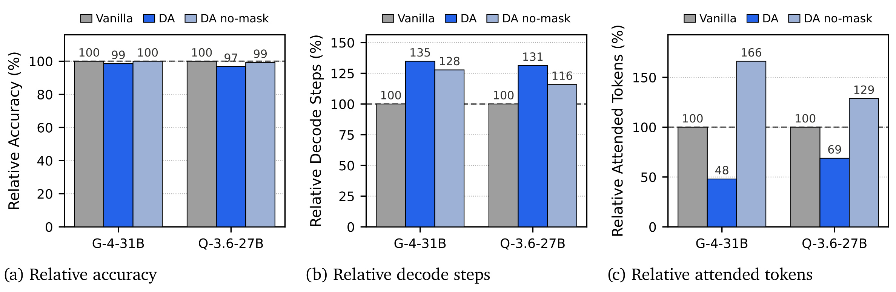
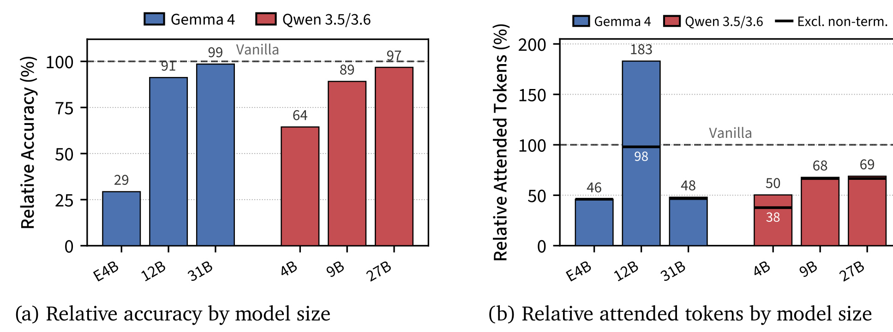
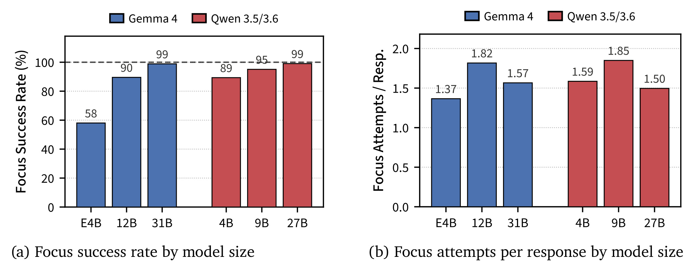
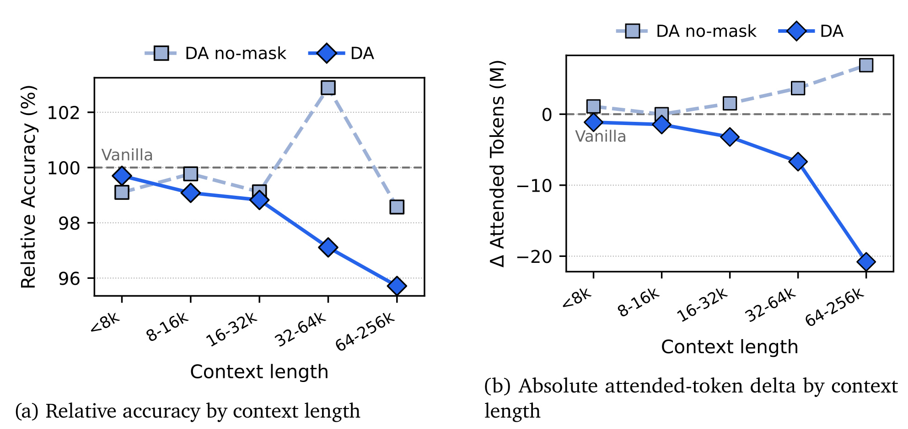
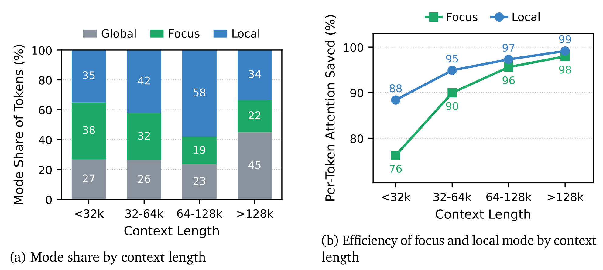
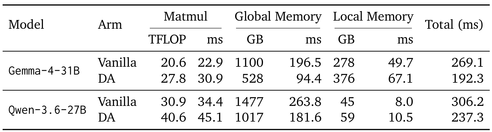
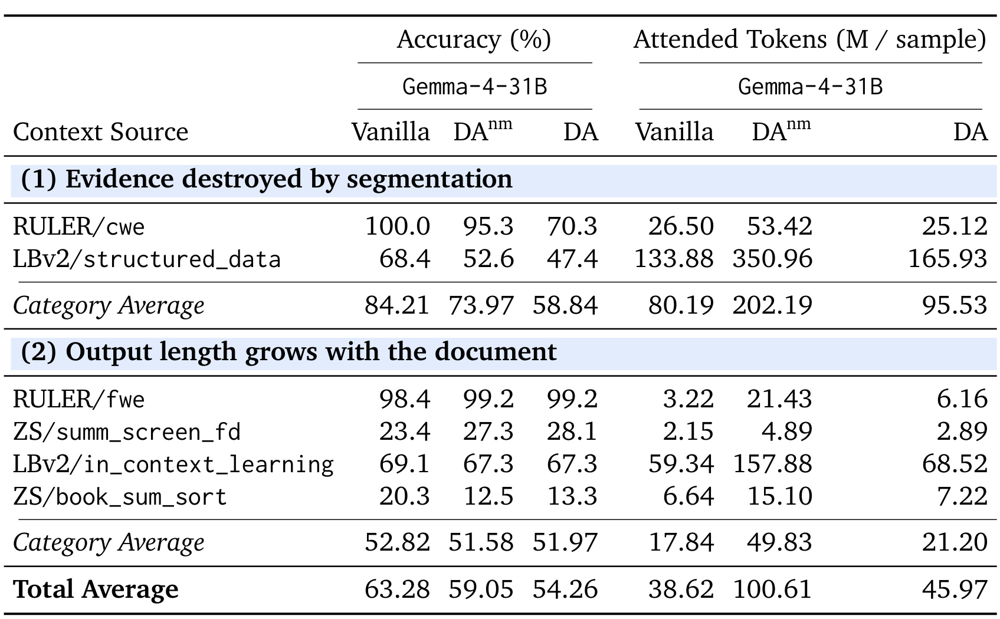

Language Models Can Control Their Own Attention / 语言模型可以控制自己的注意力
这篇论文介绍 Declarative Attention（DA，声明式注意力）：不再由一个外部打分器在每个生成步扫描长上下文，而是让模型在自己的可解析推理文本中声明“此刻需要看哪里”。推理引擎再把这些声明转成 segment-level attention mask，使全局注意层跳过大部分 KV cache 读取。作者为 Namgyu Ho、Huzama Ahmad、Woosung Koh、Se-Young Yun、Tal Schuster 与 Cicero Nogueira dos Santos；前四位作者所属 KAIST AI，Google DeepMind 作者参与合作，但论文首页明确说明 Google 合作者在本工作中只承担顾问性角色。论文于 2026 年 9 月 2 日公开，入口为 arXiv:2609.02737。arXiv 页面与 PDF 前三页未给出独立代码仓库。
长上下文模型的注意权重通常只集中在少量 token 上，却仍在每个 decode step 读取整个 KV cache 才能找到它们；而借助轻量代理分数预选 token 的方法，每一步仍需要付出随上下文长度线性增长的扫描成本。真正的缺口是：能否让模型在开始一段推理前，直接声明它自己已经知道的相关范围？
1. 背景和问题
Transformer 自回归生成的基本动作是：新 token 的 query 同先前所有 key 计算相似度，再以权重聚合 value。为了避免重复计算，key 和 value 会保留在 KV cache 中。这套机制在上下文不长时很自然，但当上下文扩展到数十万乃至百万 token，decode 的瓶颈往往不是算出 attention score 的乘加法，而是每个序列都要从 HBM 把庞大 KV cache 读一遍。论文以 Qwen-3.5-397B-A17B 的 1M-token 上下文为例：每个序列每步需读取约 15 GB KV cache，这已接近加载 17B 活跃参数的字节量。与此同时，既有实证工作又表明真正拿到高注意权重的 token 很少。因此系统实际在做一件矛盾的事：为了找到少量有用内容，反复搬运全部内容。
稀疏注意力并不缺“少看一些”的直觉，难点是在做完全量 attention 之前，真实 attention score 并不存在。早期方法根据近因性、过去注意强度或固定窗口保留 token，但静态规则不知道未来 query 究竟要追问哪个细节。较新的路线使用压缩 key、indexer 或轻量代理打分器，先扫描每个上下文位置，再保留 top-k 候选。它们能大幅降低常数，却没有取消每步的 \(O(N)\) 扫描。DA 选择的正是一条正交路线：不从隐状态另外猜测会看哪里，而是把“去哪里找证据”本身变成可读的生成内容。
这个想法建立在两个能力假设上。第一，当代语言模型的隐状态已经编码了部分关于后续 token 和任务所需信息的预期；第二，prompt 能够把这种内部判断转换成有结构的外部文本。以往 Self-Selected Attention Span 类工作曾经通过按任务微调、人工分段与标注语法学会选范围，但上下文只在 2K token 量级。DA 的新意在于，同一个任务无关 prompt 能在十五个长上下文来源上零样本驱动现成模型。它没有训练辅助 scorer，也没有对 Gemma 或 Qwen 做参数更新；这使实验更像是“当前模型裸能力的下限”，却也把协议遵循、输出变长和任务分解失败全部暴露出来。
对工程读者而言，本文最容易被误读的是“成本”。论文的主实测量是 attended tokens：把每个 decode step 可见的 KV 位置数累加，它直接表征全局 KV 读取工作量。这不等于实测 wall-clock，也不等于吞吐提升；二者还受批量、kernel、scheduler、prefill/decode 解耦、通信和本地注意层成本影响。作者后续给出的 0.71× 与 0.77× 是特定 B200、MFU/MBU 假设下的 roofline 理论估算，不是对真实服务的延迟测量。带着这个口径区分读后文，才能正确评价 DA 的价值。
论文还把 DA 与 KV-cache eviction 和 context compaction 分开。Eviction 会丢掉被判定为不重要的 KV 条目，后来若重新需要这些内容，往往必须从原文重做 prefill；compaction 则常用摘要替换原始 token，信息损失带有不可逆性。DA 只改变当前步的可见集合，序列与 KV 条目本身仍保留，后续 global 或新 focus 可再次访问。这种“可逆的暂时忽略”与删除式缩短有本质差别，也使声明的访存边界有机会成为将 KV 在 GPU 与 host memory 之间迁移的提前信号。不过，论文对 offloading 只提出系统设想，没有报告实现或实测。
从研究问题看，DA 不是要证明显式推理文本完美描述了模型内部真实因果过程。它更实用地问：这段文本能否作为一个足够稳定的系统 API，在保留任务质量的同时确实减少全局内存读取。因而证据链必须同时回答四件事：现成模型能否零样本产生合法声明；限制可见性后准确率损失多大；总 attended tokens 是否在输出变长后仍然下降；以及下降的读取量是否落在真正主导 decode 的硬件项上。后面的 DAnm 消融、模型规模曲线、上下文长度分桶与 roofline 分解，正是围绕这四个问题构造的。
与按每步隐表示动态重选 token 的稀疏注意力相比，DA 的策略只在一段声明边界处变化，中间连续多个 token 复用同一个 mask。这降低了选择频率，也让人能看见“为什么这一段只读某些证据”。可审阅性并不保证正确性：模型可以非常规范地声明一个错误 chunk，而这种错误不会被 focus success rate 发现。因此 DA 同时引入了一个新的可观测面和一个新的失败面，需要用任务准确率、声明合法性与访存成本三类指标共同评估。
2. 方法
2.1 三种模式与常驻 scaffold
DA 把一次响应组织成多个注意范围保持不变的连续文本段。<global> 让模型看到全部上下文段，适合导航和定位下一处证据；<focus magic_chunks="K"> 只保留指定分段，用于在小范围内抽取原值和做局部推理；<local> 不再看任何长上下文段，只基于问题、指令与已生成响应完成计算、综合和最终作答。协议不规定三种模式必须按某个固定次序或次数出现；模型可以从 global 找第一个段，进入 focus 抽取，再回 global 找第二个段，最后到 local 合成答案。
这三种模式只改变长上下文区域的可见性。系统指令、用户问题、DA 使用说明与响应至今的 token 构成常驻 scaffold，在任何模式中都保留。如此设计的原因是，local 并非“什么都忘了”，而是把之前在 focus 片段里已经复述到响应中的关键值当作小型工作记忆。它把“用语言选上下文”与“用 attention 读 KV”变成同一个动作：可审阅的标签就是推理引擎执行掩码的控制信号。

Figure 1 用一个 25,466-token prompt 的例子展开了信息流。左侧长上下文被分成 B1 到 B12，右侧 R1 先在 global 中用全文导航；R2 声明 focus B1，因而仅读 3,435 个 prompt tokens，相对全局读取减少 86.5%；R3 进入 local，只保留 scaffold 与已生成的 R1/R2/R3，读取 1,124 个 prompt tokens，降幅 95.6%。底部矩阵的三行不是事后根据 attention score 挑出的 token，而是标签解析后直接生成的可见区域。图中 A、C、D 一直可见，说明节省主要来自 B1…B12 长上下文，而非删掉任务指令或模型自己的中间结果。同时，R2 中抽取的数值被复写到响应里，这正是 R3 不再重读 B1 仍能完成加法的条件；local 依赖的不是隐式记忆，而是已经显式外化的中间证据。
2.2 从原始长文到可寻址 magic chunks
focus 要求模型指出哪个上下文区域应当可见，因此输入必须先有稳定地址。论文对静态 benchmark 的长文本做启发式分段，目标约为 2048 token。切分器优先在双换行分隔的段落边界断开；如果单个单元仍超长，再依次退化到单换行、句末、分句符号和单词边界，从不在一个单词中间切开。这是一种便于在现成 benchmark 上实验的近似，不是完美的语义分段器；表格或跨段证据被切断，后面正是一类明确失败。
每个段以 magic chunk 命名，但不使用普通新分隔符硬贴在文本中。作者将全部段预先排成一段伪工具调用转录：assistant 轮看起来调用 get_magic_chunk，tool 轮再返回“Magic Chunk N”与其内容。实际上没有工具在运行，所有段在 prefill 前就已经存在。这种格式借用模型在后训练中反复见过的 user/assistant/tool 特殊 token 边界，让它比跟踪任意新标记更容易守住 chunk 起止。在真实 Agent 上下文中，用户轮、工具结果和检索 passage 本来就是天然分段，DA 可能无需这一层人工制造的 magic chunks。
2.3 Decode-time 状态机与 block table 重写
状态机初始位于 global。当输出流读到 <focus ...> 或 <local> 开标签的右尖括号时，它切换状态；当对应闭标签结束时，又回到 global。<global> 本身主要是给模型的结构提示，因为标签之间原本就默认 global，不需要额外转移。状态机在每个 decode step 将模式映射成保留区间，但真正节省 HBM 读取的前提是，掩码必须与服务引擎的存储粒度一致。
vLLM 用通常为 16–32 token 的固定 block 管理 KV cache，attention kernel 也按整块读取。因此 DA 不是对个别 token 打零散的 0/1 标记，而是将需保留的连续 token span 向两侧取整到 block 边界，每个边缘最多额外保留一个块。相对约 2048 token 的分段，这个数十 token 的保守扩张很小，却保证模型声明的内容不会因对齐而丢失。作者通过 attention metadata builder 的 hook 就地改写当前 request 的 KV-cache block table；FlashAttention 只看到更短的 block list，kernel 与 scheduler 都不需要改。
DA 只对全局注意层有效。Gemma-4-31B 中大多数层是带固定窗口的 SWA，Qwen-3.6-27B 中大多数层使用 GDN 递归状态；这些局部或线性机制每步成本不随总上下文长度增长，DA 不会去掩它们。另一个代价是语法化推理比 Vanilla 生成更多 token，于是参数矩阵乘和局部层状态读取反而随 decode steps 增加。是否真正更快，取决于全局 KV 读取在原系统中占多大比例，不能只看掩码之后的单步稀疏度。
2.4 成本口径与 roofline 分解
论文首先定义一次响应的 attended-token 总量，它跨所有 decode step 累加当步可见的 KV 位置：
符号解释：\(A\) 是一次完整响应的总注意读取工作量，\(t\) 是生成步，\(\operatorname{attended}(t)\) 是第 \(t\) 步实际保留的 token 位置数。这个定义同时包含“每步看多少”与“一共生成多少步”，所以能捕捉 DA 输出变长对节省的抵消；它是 token 级计数，block 对齐的实际部署会多读少量边缘 token。
为将工作量投影到硬件上，作者使用 roofline 时间：
符号解释：\(\mathrm{work}\) 对计算受限操作是 FLOPs，对带宽受限操作是 bytes；\(R\) 分别是硬件峰值 FLOPS 或峰值 HBM 带宽，\(u\) 分别是 MFU 或 MBU。这是将每类操作按自己的硬件上限计价的比较单位，适用于大批量、充分利用硬件且 prefill/decode 解耦的服务设定，不是任意并发度下的测量时钟。
矩阵乘项、每 token 的全局 KV 字节量，以及全局/局部内存时间分别写为：
符号解释：\(P\) 是每步激活参数数，\(D\) 是 decode steps，\(C_{\mathrm{peak}}\) 是峰值算力；\(b_{\mathrm{kv}}\) 中的首项 2 分别计 key 和 value，\(L_{\mathrm{global}}\) 是全局注意层数，\(n_{\mathrm{kv}}\) 与 \(d_{\mathrm{head}}\) 是 KV head 数和单 head 维度，\(s_{\mathrm{dtype}}\) 是每元素字节数；\(B_{\mathrm{peak}}\) 是峰值带宽，\(s_{\mathrm{local}}\) 是每步固定的 SWA KV 或 GDN 状态读取量。DA 直接降低的是含 \(A\) 的 \(T_{\mathrm{global}}\)，而因 \(D\) 变大，\(T_{\mathrm{matmul}}\) 与 \(T_{\mathrm{local}}\) 可能上升。
最后，全局读取在这个 ceiling 分解中的份额是：
符号解释：\(\rho_{\mathrm{attn}}\) 表示可随总上下文长度增长的全局 KV 读取，在三项 decode roofline 时间中所占比例。它随架构、上下文长度、KV dtype 与利用率变化，因而不能把附录对 1M token 的高份额外推到所有请求。方法的训练/推理差异则极其清楚：本文没有训练阶段或参数更新，全部结果来自现成模型的 zero-shot prompt；推理时才运行标签解析、状态迁移与 block table 改写。
3. 实验结果
3.1 数据集、对照组与指标
实验覆盖两个模型家族共六个尺度：Gemma-4-{E4B, 12B, 31B} 和 Qwen-3.5-{4B, 9B}/Qwen-3.6-27B，主结果用最大的 Gemma-4-31B 与 Qwen-3.6-27B。15 个数据来源来自 RULER、LongBench v1/v2、LooGLE 与 ZeroScrolls，分成单跨度检索/推理与多跨度推理。样本超过有效输入上限时被排除：256K 模型需为生成预留 8K、为 DA prompt 模板预留 4K，因而有效上限是 244K；Gemma-4-E4B 对应 116K。每个来源最多抽取 128 个样本，同一模型的三个 arm 使用相同样本。

Table 1 显示这不只是一组短 needle-in-a-haystack 任务。单跨度组包含 passkey、UUID、key-value、会议 QA、多文档 QA、论文 QA、代码库 QA 与选择题；多跨度组则包含单文档问答、对话历史、长依赖 QA、脚本完形和情感问答。长度分布高度不均：诸注意 code_repo 原始均值超过 1M token，但实际会受 244K 输入过滤；许多 RULER 任务则只在 9K–11K 左右。论文是先在每个来源内计算平均，再对 15 个来源等权 macro-average，因而一个大样本短文任务不会靠样本数压过长文任务。表中 11 个来源使用原始 QA，4 个用 Gemini-3-Flash 合成 QA，这是结果外推时需保留的数据来源差异。
三个对照 arm 分工明确。Vanilla 直接内联原上下文并使用全量因果注意；DA 使用分段 prompt、三种标签和真实掩码；DAnm（DA-no-mask）使用与 DA 相同的 chunked prompt 与生成语法，却始终保留全量注意。所以 Vanilla 对 DAnm 隔离了 prompt/输出格式影响，DAnm 对 DA 才隔离掩码影响。准确率由基于标准答案与严格 rubric 的 LLM judge 评定，格式失败记为错误；效率主指标是每响应 attended tokens。全部模型关闭 thinking mode，最长生成 8K token，并在 NVIDIA B200 上由 vLLM 服务。
3.2 主结果：省了多少，损失了多少
在 15 个来源的等权平均上，Gemma-4-31B 的 attended tokens 从 13.43M 降到 6.45M，减少 52.0%，准确率从 87.01% 降到 85.74%，代价是 1.27 个百分点。Qwen-3.6-27B 的 attended tokens 从 22.54M 降到 15.52M，减少 31.1%，准确率从 85.31% 降到 82.56%，代价是 2.75 个百分点。这个映射不能交换：52.0%/1.27pp 对应 Gemma，31.1%/2.75pp 对应 Qwen。Gemma 在单跨度组与多跨度组分别节省 54.8% 和 48.5%；Qwen 为 29.7% 和 32.6%。

Table 2 中的总平均只是入口，分任务数值揭示了收益与风险的非对称性。Gemma 在 15 个任务中有 7 个匹配或超过 Vanilla，Qwen 有 5 个，其中很多是已到 100% 上限的 niah 检索。Gemma 在 longdep_qa 提升 3.1pp，Qwen 在 code_repo 提升 5.6pp，但这些单任务正收益不应被理解为 DA 会普遍提高准确率。相反，多跨度推理的平均准确率代价在两个模型上都更大：Gemma 是 2.28pp（单跨度为 0.78pp），Qwen 是 3.59pp（单跨度为 2.34pp）。一个 focus 片段很容易容纳局部答案，却不一定能保留跨多段相互约束的证据。
绝对节省主要来自最长任务。code_repo 每响应在 Gemma/Qwen 上分别减少 41.8M 和 52.0M attended tokens，dialogue_history 分别减少 22.1M 和 39.1M。但 Qwen 在 qmsum 与两个 LBv2 QA 等五个来源上的总 attended tokens 反而超过 Vanilla，因为它在 DA prompt 下生成得更长，使单步节省被更多步数抵消。因此主结果支持的是“在平均上大幅减少 KV 可见位置，以小幅平均准确率为代价”，而不是“所有任务都更准、更快”。
3.3 掩码归因：不是因为答得更短
DAnm 是判断 DA 是否真的靠掩码节省的关键对照。Gemma 上 DAnm 的准确率与 Vanilla 同为 87.01%，Qwen 上只从 85.31% 降到 84.62%，说明分段工具转录与标签 prompt 本身几乎不损害准确率。可是 DAnm 没有真正掩掉 KV，它对更长的格式化推理始终做全量 attention；结果 Gemma attended tokens 比 Vanilla 高 66.2%，Qwen 高 28.8%。加入掩码后，DA 相对 DAnm 分别减少 71.1% 和 46.5% attended tokens，才从额外开销变成净节省。

Figure 2 将三个指标都归一化到各自模型的 Vanilla=100。左图显示三个 arm 的准确率都很接近；中图却显示 DA 的 decode steps 在 Gemma/Qwen 上分别为 135% 和 131%，DAnm 也是 128% 和 116%。右图是决定性反差：DA 总 attended tokens 只有 48% 和 69%，DAnm 却升到 166% 和 129%。也就是说，DA 实际上“答得更长”，而不是靠更短输出节省；它能降低总读取量，只因为 focus/local 步骤每步看到的 KV 极少。同样，DA 与 DAnm 之间的准确率差也说明主要质量代价来自信息可见性受限，不是 chunked prompt 形式。所以一个公平的复现必须同时报告每步比率、总生成步数和每响应累加量，只选其中一个都会遮蔽协议额外生成的代价。
3.4 规模效应与协议遵循
作者把 DA 的准确率与总 attended tokens 都归一化到同规模 Vanilla，比较六个 backbone。相对准确率在两个家族中随规模单调改善：Gemma 从 E4B 的 29%、12B 的 91% 到 31B 的 99%；Qwen 从 4B 的 64%、9B 的 89% 到 27B 的 97%。这支持了“强模型更能在有限可见证据下组织推理”的趋势，但它只比较两个模型家族的六个点，不足以证明任意架构都会按参数量自动收敛到 Vanilla。

Figure 3 的右图提醒我们不能把总 attended tokens 当作纯粹的掩码指标。六个模型中五个低于 Vanilla，Gemma 大约为 46%–48%，Qwen 为 50%–69%，但 Gemma-4-12B 达到 183%。这不是掩码忽然让每步看得更多，而是约 6% DA 响应用完 8K 生成预算仍未终止。排除这类响应后，其比率回到 98%；Qwen-3.5-4B 也从 50% 回到 38%。论文进一步计算每 step attention ratio，六个点中五个接近 0.5，小型 E4B 为 0.65；这才更接近掩码本身的稀疏度，而总量还混合了模型的生成长度策略。
协议遵循是 DA 的另一道门槛。focus success rate 指 <focus> 声明能否解析成有效 chunk 引用。如果引用不存在的编号或语法不闭合，系统便无法按原计划收窄可见集合。下图显示 Gemma 成功率从 E4B 的 58%、12B 的 90% 到 31B 的 99%，Qwen 从 4B 的 89%、9B 的 95% 到 27B 的 99%。

Figure 6 的左右子图合在一起才能排除一个混淆：大模型并不是因为少用 focus 而更容易成功。各尺度每响应的 focus 尝试数仅在约 1.37–1.85 之间，没有明显的单调规律；增长的是每次声明的可解析性。Gemma-4-E4B 的 58% 成功率与 Figure 3 中准确率崩溃相对应，表明小模型的失败有相当一部分是“没有正确说出控制语法”，而非掩码范围内的推理必然不足。这也解释了为什么本文将 zero-shot 结果称为下限：专门的格式与策略后训练可能首先改善的就是遵循率，不需要更改掩码机制。但 99% 的引用成功率也不等于选中了真正有用的段：这个指标只检查语法和 chunk ID，内容选择错误最终仍要由任务准确率反映。
3.5 上下文越长，绝对节省越大
把全部样本按上下文长度分桶后，Gemma-4-31B 的 DA 在 32K 以内的相对准确率与 Vanilla 相差约 1 个点以内，之后逐渐下降，最长 64K–256K 桶约为 Vanilla 的 96%。DAnm 没有同样恶化，再次将原因指向掩码带来的信息受限。与此同时，DA 相对 Vanilla 的绝对 attended-token delta 从短上下文约 -1M 扩大到最长桶约 -21M/响应，DAnm 的额外开销反而向上扩大。

Figure 4 的横轴同时解释了收益与代价为什么会一起放大。如果每个 focus/local 步骤省下的是一个大致稳定的比例，那么待读上下文基数越大，节省的绝对 token 自然越多；附录的归一化曲线显示 Gemma 各桶 DA 大致读取 Vanilla 的 50%–64%，与这个解释一致。另一面，越长上下文越可能需要多次 global 导航，也更可能将跨段依赖剪断，于是准确率逐渐损失。Qwen 在最长桶恶化得更明显：相对准确率约降到 92%，总 token 节省也收窄，这与它的 global 模式占比在最长桶升到约 55% 相互吻合。
为了理解这个家族差异，还要将总成本分解成模式占比与模式内单 token 成本。Gemma-4-31B 整体约 27% 生成 token 处于 global，其余约 73% 处于 focus 或 local。focus 平均只看 Vanilla 当步约 12% 的位置，local 约看 6%；按长度桶计算，两者的每 token 节省为 76%–99%。

Figure 5 左图显示，上下文超过 128K 时 global 占比从短桶的 27% 升到 45%，focus/local 合计仍有 55%；右图显示 focus 在同一过程中从 76% 每 token 节省提升到 98%，local 从 88% 提升到 99%。因而长文本中的主要限制并非 focus/local 模式不够稀疏，而是模型为了重新导航而在 global 中停留得更久。就减少总 KV 读取而言，优化重点应该是让 global 导航只看一个更短的段索引，或训练模型更早进入正确 focus，而不是再对 local 做一点边际稀疏。这个推论来自图中的成本分解，并未被本文的训练实验直接验证。另外，global 在总 attended tokens 中的份额超过它在生成 token 中的份额，因为每个 global step 都要重读全部长上下文；这正是导航模式成为下一个优化目标的原因。
3.6 从 token 节省到 wall-clock：只是 roofline 估算
作者在单张 B200、bf16、计算项 MFU=40%、内存读取 MBU=70% 的设定下，将每次响应分成 matmul、global memory 与 local memory 三项。Gemma Vanilla 的平均 decode steps 为 332，DA 为 448；Qwen 从 573 增到 752。所以矩阵乘和局部状态读取必然上升，只有 global-memory 项因 \(A\) 从 13.43M/22.54M 降到 6.45M/15.52M 而显著下降。

Table 3 显示 Gemma 的 global-memory 估算从 196.5 ms 降到 94.4 ms，但 matmul 从 22.9 ms 升到 30.9 ms，local-memory 从 49.7 ms 升到 67.1 ms，总计从 269.1 ms 到 192.3 ms，即 0.71×。Qwen 的 global-memory 从 263.8 ms 到 181.6 ms，matmul 从 34.4 ms 到 45.1 ms，local-memory 从 8.0 ms 到 10.5 ms，总计从 306.2 ms 到 237.3 ms，即 0.77×。差异不只由 52.0% 对 31.1% 的 attended-token 减少决定：Gemma 有 50/60 层 SWA，固定局部读取在 DA attention 时间中占 42%；Qwen 的 GDN 状态只占约 5%，全局读取节省更能直接传递。表中毫秒是各操作按硬件 ceiling 折算的理论 decode 成本，不包括 prefill，不包括 block 对齐额外读取，也没有测量端到端延迟或吞吐。
3.7 失败样例：分段破坏证据与输出长度增长
附录对 Gemma-4-31B 另外分析了六个 DA 不能保住准确率或不能减少总 attended tokens 的来源。第一类是分段销毁了任务需要的结构：RULER/cwe 需要在全部段上做全局计数，structured_data 的表格会被启发式切分器切断。第二类是输出长度本来就随文档长度增长，例如词频枚举、逐段摘要、整书排序与多样本上下文学习，单步减少的读取量会被大量 decode steps 累加回来。

Table 10 将这两类问题从概念变成了定量边界。在“分段破坏证据”组，Vanilla 平均准确率 84.21%，DA 只有 58.84%，尽管 DA 在 cwe 上仍将 attended tokens 从 26.50M 小幅降到 25.12M，却丢了近 30pp 准确率；structured_data 更是从 68.4% 降到 47.4%，总 attended tokens 从 133.88M 增到 165.93M。在“输出随文档增长”组，准确率平均基本持平（52.82% 对 51.97%），但总 attended tokens 从 17.84M 增到 21.20M/样本。论文指出这六个来源的每 step attention 仍下降 39%–67%，正好证明了“单步变稀疏”不能保证“每响应总成本下降”，更不能保证必需证据没被分段破坏。结构感知分段、跨 focus 的 map-reduce 累积与针对输出形状的模式策略，都是后训练需要补齐的具体能力。
最后，准确率由本地 Qwen-3.5-4B judge 大规模评定，作者用 Gemini-3.1-Pro 对 2,993 条分层响应复判。两个 judge 在单条判定上一致 98.53%，Cohen's \(\kappa=0.940\)，每评估单元准确率的 Pearson \(r=0.992\)，McNemar \(p=0.65\)。这组校验降低了“主结果只是弱 judge 偏差”的可能性，但自动 rubric 与 LLM-as-a-judge 仍不是人类专家逐例审核的完全替代。另外，作者的初步实验发现模型无法在 thinking tags 内稳定遵循 DA，因而所有实验都关闭 thinking mode。论文虽使用“reasoning trace”描述可解析中间文本，但它并未验证 DA 已能作用于当代 reasoning model 的隐式或交错 thinking 轨迹。
4. 总结
4.1 我的判断与可迁移启发
DA 的主要价值不是又提出一个更小的 attention scorer，而是建立了一个新的模型—系统接口：模型以人和程序都能读的文本预告访存范围，系统则用同一段文本决定 KV block 读取。这使稀疏策略可被指令修改、可被审阅，也可能与强化学习中的准确率—效率联合奖励对接。但现有证据只说明了 off-the-shelf 模型在 zero-shot、非 thinking 设定下已经能用这个接口，且主实测效果是减少 attended tokens，不是完成了生产系统的实测性能闭环。
对 RAG 和 Agent 系统，检索与 DA 解决的并非同一个问题：检索决定什么进入 context，DA 决定什么已在 context 中却不需在当前步被读取。工具结果往往只在发起它的局部阶段有用，却会永久留在后续对话中；用 tool-call ID 或 turn ID 做天然 focus 地址，比对静态文档制造 magic chunks 更符合论文的系统动机。模式只在连续 span 边界变化，而且在读取新段之前会先发出声明，这还为 KV cache 分层与预取提供了时间窗口：未 focus 段可暂时下沉到 host memory，声明新段时提前搬回。这是作者讨论的未来方向，本文并没有实现或测量这类 offloading。
对长序列推荐与搜索，一个值得测试的迁移方向是把用户历史按 session、时间窗、内容族或曝光来源变成可寻址段，让生成式重排器先 global 导航、再 focus 到少数兴趣区间，最后 local 合成排序理由。但推荐中的短期多兴趣、跨域关联与公平曝光很容易受错误分段影响；Table 10 的表格切断失败是一个直接警告。有价值的线上实验不应只记 GPU 时间，而应同时记录模式轨迹、focus 失败、生成步数、候选覆盖与排序指标，否则成本收益可能隐藏对少数用户兴趣的系统性遗漏。
4.2 局限与后续跟进
需要保留至少五个限制。第一，所有结果都是 zero-shot，模型比 Vanilla 多生成约三分之一的步数，协议策略显然未优化。第二，静态 benchmark 依赖人造分段，全局计数、表格与多段证据可被破坏。第三，实验关闭 thinking mode，无法确定协议是否能在更长、交错的隐式推理中稳定运作。第四，global 步骤仍付出全量注意成本，且其占比在最长上下文中上升；如果架构已用强 indexer 大幅压缩全局读取，DA 的边际收益会收窄。第五，wall-clock 只是特定利用率与解耦部署下的 roofline ceiling，没有实测低并发延迟、batch throughput、通信、调度抖动和端到端 SLA。第六，主评估仍是 LLM judge，且四个来源的 QA 是合成的，评审器复核不能消除任务构造偏差。
后续最值得做三组验证。一是用 SFT 或 RLVR 联合优化答案准确率、attended tokens、非终止率与 global 模式占比，检查 1.27pp/2.75pp 的质量差是否真能收窄，而不只是把错误移到未观测任务。二是在真实多轮 Agent trace 上用工具调用做天然分段，对比人工 magic chunks，并加入跨段表格、长输出和强制简答等反例。三是完成真正系统基准：在多种 batch size、长度和 KV dtype 下同时测 prefill、decode、吞吐、P50/P99 延迟、block 对齐额外读取与控制标签解析开销。如果这三组证据能与本文的 token 级收益一致，DA 才会从一个有说服力的控制协议，走向可依赖的长上下文服务机制。